Line-up
Previews
James Acaster: COLD LASAGNE HATE MYSELF 1999
 James Acaster talks about the best year of his life and the worst year of his life and tries to connect with you.
James Acaster talks about the best year of his life and the worst year of his life and tries to connect with you.
Edinburgh Comedy Award nominee for Best Show: 2012, 2013, 2014, 2015, 2016.
Photo by Edward Moore.
Lou Sanders: Shame Pig
 Yes, big topics are discussed. Her labia, for one. But also shame, sobriety and unrequested sex. Sanders has met some pigs – and been a mucky little pig herself – and now she’s rolling around in her own filth for your delight.
Yes, big topics are discussed. Her labia, for one. But also shame, sobriety and unrequested sex. Sanders has met some pigs – and been a mucky little pig herself – and now she’s rolling around in her own filth for your delight.
As seen on Alan Davies: As Yet Untitled, The Russell Howard Hour, Comic Relief and heard on Radio 4’s The Unbelievable Truth. Lou has written for 8 Out Of 10 Cats, Mock The Week and Miranda Hart.
“Destined for hugeness” Time Out
“Something new is happening in comedy” Independent
“Genuinely different” Scotsman
Photo by Mark Dawson.
Nish Kumar: It's in Your Nature to Destroy Yourselves
Double Edinburgh Comedy Award nominee and host of The Mash Report trials new material for a national tour. The title is a quote from Terminator 2. There will be jokes about politics, mankind’s capacity for self-destruction and some jokes that simply don’t work. Come watch someone build something.
As seen on Live at the Apollo, Taskmaster, QI and Have I Got News For You.
“One of the best young comedians we have” Times
“A masterclass by a no-frills standup at the height of his powers” Guardian
Photo by Idil Sukan.
Elf Lyons: ChiffChaff
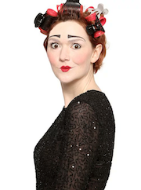
The Edinburgh Comedy Award nominee (Best Show 2017) presents her one-woman musical about the economy. You read that right. Let’s get fiscal. The queen of clown is back and she’s making the dismal science fun with a whole orchestra and an Invisible Hand. BBC New Talent Hotlist 2017. Fringe World Best Comedy Show 2018 nominee. British Vogue's '20 Names of Now'.
“A fast talking, smart-thinking stand-up for whom the adjective 'kooky' could have been invented for” Guardian
“Hysterical tour de force” ★★★★★ Three Weeks
“A fantastic comedic success” ★★★★ Fest
★★★★ Scotsman
Photo by Andy Hollingworth.
Mark Watson: The Infinite Show
Cluster-bombed with yoghurt on Taskmaster, half-killed on The Island, Watson returns to what he's best at: being indoors. This show began as a work-in-progress in Edinburgh last year and now makes its official premiere. It's about empathy. Ninety-nine percent of the world's population is made up of other people – why can't we understand them? One of the Fringe's most beloved and thinnest acts offers some suggestions. Complete sell-out 2014-2017.
“He sparkles with originality and verve” Chortle
“Arrive early for the longest queue in Edinburgh” List
“Hugely entertaining, craftsmanlike, remarkable” Telegraph
Photo by Patrick Balls.
Suzi Ruffell: Nocturnal
 Suzi is going back to the fringe with a brand new show! Her last show was a complete sell out, got heaps of great reviews and was recommended by the British Comedy Guide, The Scotsman and The Sunday Times. It's important to remember that this is a work-in-progress so it won't be that good but will have moments that you’ll really enjoy! As seen on BBC, Channel 4, ITV, Dave, Comedy Central and the 249 bus to East London where she lives. She also has a cat, she may discuss this.
Suzi is going back to the fringe with a brand new show! Her last show was a complete sell out, got heaps of great reviews and was recommended by the British Comedy Guide, The Scotsman and The Sunday Times. It's important to remember that this is a work-in-progress so it won't be that good but will have moments that you’ll really enjoy! As seen on BBC, Channel 4, ITV, Dave, Comedy Central and the 249 bus to East London where she lives. She also has a cat, she may discuss this.
Photo by Matt Crockett.
Steen Raskopoulos: Stay
The electrifying new show from the gifted character comedian and improviser. Nominated for both the prestigious Barry Award and Edinburgh Comedy Awards Best Newcomer, Steen's live shows are a “triple threat of performance, material and charisma. A flawless hour of comedy” ★★★★★ (Herald). As seen on Top Coppers (BBC Three), Whose Line is it Anyway? (ABC Australia) and Steen Raskopoulos' Scare BnB (Sky).
“Unique and completely hilarious and life-affirming” ★★★★★ New European
“Technically astonishing and emotionally fulfilling” ★★★★★ List
“An inspired and utterly original stand-up” ★★★★ Sunday Times
“Like witnessing a talent explosion” Independent
Sofie Hagen Does Something (Not A Show Yet)
 If a show is defined by 'a person is on a stage and occasionally says words' then oh boy, this will be a show alright. If you like people saying words, then this is the show for you. If you are expecting jokes, structure and flawless delivery, you will be gravely disappointed.
If a show is defined by 'a person is on a stage and occasionally says words' then oh boy, this will be a show alright. If you like people saying words, then this is the show for you. If you are expecting jokes, structure and flawless delivery, you will be gravely disappointed.
Photo by Natasha Pszenicki.
Lost Voice Guy: Inspiration Porn
As seen on Britain’s Got Talent, BBC New Comedy Award winner and star of Ability (BBC Radio 4), Lost Voice Guy, has unwittingly become an unintentional porn star because of the inspirational memes that are everywhere these days. Come and see why he doesn’t want to be an inspiration because of these stupid memes and why he thinks they’re bollocks. He may not be able to talk but he definitely has something to say and his comedy will leave you speechless.
“Laugh-out loud funny” ★★★★ Independent
“Savagely funny” ★★★★ Wee Review
“Candid & inspiring...consistently hilarious” ★★★★ Broadway Baby
Photo by Steve Ullathorne.
Kiri Pritchard-McLean: Victim, Complex
 You might have seen Kiri on Live from the Comedy Store, or The Russell Howard Hour, or heard her on the Now Show, or the Newsquiz. Or maybe you listen to her hit podcast "All Killa no Filla"? You might have no idea who she is and that's fine too. But what you all need to know is that she's, very quietly been going mad for a few years and to borrow a phrase from Uma Thurman she's been “waiting... to feel less angry”. So, it's time to talk about victims, women, love and lies. You might not even believe her, but she's used to that.
You might have seen Kiri on Live from the Comedy Store, or The Russell Howard Hour, or heard her on the Now Show, or the Newsquiz. Or maybe you listen to her hit podcast "All Killa no Filla"? You might have no idea who she is and that's fine too. But what you all need to know is that she's, very quietly been going mad for a few years and to borrow a phrase from Uma Thurman she's been “waiting... to feel less angry”. So, it's time to talk about victims, women, love and lies. You might not even believe her, but she's used to that.
“an increasingly impressive comic, making powerhouse standup from the thorniest of subjects” ★★★★ Guardian
Photo by Kayla Wren.
Kieran Hodgson: '75
Ask most people to remember the early 70s and they won't. But for character comedian and tedious party guest Kieran Hodgson they might hold the answer to the biggest question of our time: 'Europe?'
Twice nominated for the Edinburgh Comedy Award, Kieran returns to ARGComFest with the epic tale of how Britain joined Europe in the first place. An overambitious hour of history, politics and enduring friendship punctuated by stunningly accurate impressions of dead politicians you've never heard of.
★★★★★ - Guardian, Telegraph, Evening Standard
★★★★ - Times, Sunday Times, Time Out, Scotsman, List
Leavers and Remainers welcome.
Photo by Matt Stronge.
Laura Lexx: Trying
“One can only hope there’s some life altering catastrophe around the corner for Lexx”, so said one reviewer in 2015. Luckily, the award-winning comedian with “superb material, brilliant delivery and irresistible personality” (★★★★ TV Bomb), has had a breakdown.
Laura spent 2017 trying to get through therapy, trying the patience of everyone, and trying unsuccessfully for a baby. She’s done trying now; it’s time to laugh.
As seen & heard on Sam Delaney's News Thing (RT UK), The Comedy Club (BBC Radio 4 Extra) & The Jason Manford Show (Absolute Radio).
“A joy...roars of laughter” Independent
“Real comedic steel” Guardian
“One of the most delightful performers you're ever likely to see” GQ
Photo by Karla Gowlett.
Mat Ewins
Join Mat Ewins as he presents some nonsense and some videos about starting his new life as a journalist.
Photo by Matt Crockett.
Lucy Pearman: Work-in-Progress
Harmless nonsense from 2017 Edinburgh Comedy Awards Best Newcomer Nominee Lucy Pearman.
Lucy will be trying out a brand new show featuring some nice grapes, probably an apple but more importantly, a worm.
“First steps on the road to household name” ★★★★ Sunday Times
“Breathtakingly inventive... blooming marvellous” ★★★★ List
“Almost impossible not to laugh” ★★★★ Scotsman
Photo by Edward Moore.
Stuart Goldsmith - End Of
Stu's back with some thoughts on how it all works out in the end, and whether anyone cares.
A hilarious safari through rare diseases, mishaps with appliances, and the chance to convince your son you've got some sort of backbone. Taking in ambition, money, a sort of moral autopilot, and whether men as a species are worth saving.
A Goldsmith always pays his debts.
“A master of the form” Independent
“Makes it look easy” Chortle
Photo by Matt Crockett.
Emma Sidi: Faces of Grace
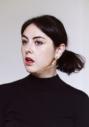
Critically acclaimed character comedian and contemporary somatic movement enthusiast Emma Sidi brings her third hour of comedy gymnastics to the Edinburgh Fringe. An original and hilarious show of graceful heroes who are having a bit of a tough time. Includes dancing. As seen on TV (W1A, Pls Like, Climaxed) and as heard on radio (The Now Show, Ladhood, Spotlight Tonight).
“A-grade stuff, invigoratingly fresh” ★★★★ Telegraph
“A comic of considerable skill… a notch above many of her peers” ★★★★ Chortle
“Sidi creates a show so good I wish I could binge it” ★★★★ Three Weeks
Photo by James Deacon.
Adam Riches Is The Guy Who…
 …you meet right after you come out of a long-term relationship. He has a nice smile, an easy manner and no car. The Edinburgh Comedy Award winner makes a rare appearance at ARGComFest and an ever rarer appearance in the afternoon with this intimate look at one of the planet’s most deliberate men. As sensitive as soap and twice as slippery. Be aware. Be very, very aware.
…you meet right after you come out of a long-term relationship. He has a nice smile, an easy manner and no car. The Edinburgh Comedy Award winner makes a rare appearance at ARGComFest and an ever rarer appearance in the afternoon with this intimate look at one of the planet’s most deliberate men. As sensitive as soap and twice as slippery. Be aware. Be very, very aware.
“Gloriously funny” ★★★★★ Scotsman
“Never less than brilliant” ★★★★★ Fest
“Quite simply one of the best character comedians in the country” ★★★★★ Chortle
Photo by Idil Sukan.
Eleanor Morton: Great Title, Glamorous Photo
Scottish rising star and oddball, Eleanor Morton tries to reinvent herself as the sexy, confident comedian she has always secretly probably been. It will definitely work. Refreshingly silly, offbeat and alternative comedy from an award-nominated person.
“The Scottish queen of the alt-com scene” Comedy.co.uk
“One of the most exciting rising stars of the British comedy circuit” ★★★★ Young-Perspective.net
“A thoroughly enjoyable hour of accomplished and skillful stand-up” Skinny
“A perfectly formed, awkward hour of social ineptitude” ★★★★ BroadwayBaby.com
“Smart, biting and very funny” ★★★★ TheWeeReview.co.uk
Photo by Matthew Highton.
Ahir Shah: Duffer
2017 Edinburgh Comedy Awards Best Show nominee Ahir Shah presents a new hour of stand-up about life and what comes after, death and what comes before, and Bohemian Rhapsody.
★★★★ Guardian ★★★★ Telegraph ★★★★ Times ★★★★ Scotsman
Photo by The Other Richard.
Gráinne Maguire: I Forgive You, Please Like Me
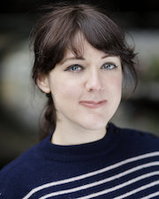
What do I need to do to make you like me? Just tell me so we can all just relax. I promise by August the show will be great so, let’s all just have a lovely time and forget that The Great Barrier Reef is completely gone now.
“Brilliantly fusing the personal and political … a performer who knows how to tell a story.” ★★★★ Scotsman
Jordan Brookes: Bleed
 The Edinburgh Comedy Award Best Show 2017 nominee returns for more loosely-justified nonsense. Critically acclaimed and adored by his peers, Jordan is riding high. There's been so much buzz about him. I've heard he does absurd stuff on stage? Yeah sort of, but it's also very accessible. Apparently, he's a really nice guy in real life too. Yeah he is. Very charming. Yes, very charming. Got a lot of time for him. Shall we give him a go then? Oh, absolutely not.
The Edinburgh Comedy Award Best Show 2017 nominee returns for more loosely-justified nonsense. Critically acclaimed and adored by his peers, Jordan is riding high. There's been so much buzz about him. I've heard he does absurd stuff on stage? Yeah sort of, but it's also very accessible. Apparently, he's a really nice guy in real life too. Yeah he is. Very charming. Yes, very charming. Got a lot of time for him. Shall we give him a go then? Oh, absolutely not.
“Wildly entertaining” ★★★★ Guardian
“Brookes is a startlingly talented comedian” ★★★★ Scotsman.
Photo by Anneliese Nappa.
Evelyn Mok: Bubble Butt
Featured on 'Chris Ramsay's Stand-Up Central' (Comedy Central), Rhys Darby's 'Furious Andrew' (C4) and BBC's New Talent Hotlist 2017, Evelyn Mok is the best thing to come out of Sweden since… IKEA? Fresh off her Soho Theatre run, her “powerful debut” (Chortle) 'Hymen Manoeuvre' was “a refreshing hour of finely crafted stand-up” (★★★★ Skinny) garnering her favourable mentions by Sarah Millican and Graham Norton also winning her 'Best Comedy Newcomer' at The Pleasance's Indies Awards. Returning with her much anticipated follow-up, where she explores responsibility, blame and cake, Mok offers a work-in-progress that promises to be “uncensored, unapologetic and... wildly refreshing” (★★★★ BroadwayBaby).
Photo by James Deacon.
John-Luke Roberts: All I Wanna Do Is [FX: GUNSHOTS] With a [FX: GUN RELOADING] and a [FX: CASH REGISTER] and Perform Some Comedy!
 Quick, hide! The Fringe favourite returns with a brand-new hour of extraordinary absurdist character comedy nonsense. What’s in it? Worrissey, 24 Spice Girls, a cricket, a unicorn, an australian, a witch, a whole bunch of other things and an explanation. Just terrific. Blam blam!
Quick, hide! The Fringe favourite returns with a brand-new hour of extraordinary absurdist character comedy nonsense. What’s in it? Worrissey, 24 Spice Girls, a cricket, a unicorn, an australian, a witch, a whole bunch of other things and an explanation. Just terrific. Blam blam!
“A show as bafflingly stupid as this should rightly divide an audience down the middle, but through some strange alchemy the crowd absolutely lap it up... a consistently hilarious hour of measured madness” ★★★★ List
“An hour of joyously daft character comedy” ★★★★ Telegraph
“This is alternative comedy close to its pinnacle” ★★★★ Chortle
Photo by Natasha Pszenicki.
Lazy Susan: Forgive Me Mother!
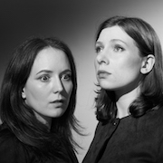
Your favourite double act are back. Sorta sketch comedy but sorta in a cool way? Ha ha. Just relax baby, why you getting so tense? Writers of critically acclaimed BBC Radio 4 series The East Coast Listening Post. Best newcomer nominees in Edinburgh four years ago.
“Comedy that shuns conventions and is forging its own unique comedic identity” ★★★★ Edinburgh Festivals Magazine
★★★★★ Mirror ★★★★ Sunday Times
As seen on The Windsors (Ch4), This Country (BBC Three), The Mash Report (BBC2).
Photo by Bobby Goulding.
Joel Dommett: Work-in-Progress
Joel, that guy from I’m a Celebrity Get me out of Here, Live at the Apollo and regrettably Pornhub, returns to ARGComFest to test out some new ideas and stories.
“Great storytelling comic” Guardian
Photo by Matt Crockett.
Catherine Bohart: Immaculate
 Catherine Bohart is the bisexual, OCD daughter of a Catholic Deacon and she’s got a hell of a lot to say about it. An hour of new material from a rising comedy star.
Catherine Bohart is the bisexual, OCD daughter of a Catholic Deacon and she’s got a hell of a lot to say about it. An hour of new material from a rising comedy star.
BBC New Talent Hotlist 2017
BBC New Comedy Award Finalist
Writer for BBC Radio 4’s The Now Show, The News Quiz and Frankie Boyle’s New World Order for BBC2
Pleasance Comedy Reserve 2017
“... a comic with distinctive voice and a story you’d like to hear.” Chortle
“... pretty much the perfect comedy package” Beyond the Joke
Photo by Rebecca Need-Menear.
Nathaniel Metcalfe: Chameleon, Comedian, Corinthian and Caricature
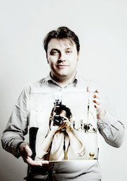
Mildly anticipated new show from the “delightfully silly” (Time Out), Josh Widdicombe’s XFM Show regular, who has also been heard on BBC Radio 4 and BBC Radio 4 Extra.
“Impressive” Scotsman
“The potential is excitingly evident” Metro
“Storytelling at its finest… His Sugar Puffs/Honey Monster comment is the stuff of dreams” ★★★★ List
★★★★ Three Weeks
“Comic Genius” Broadway Baby
“Brilliant, unusual and very funny” Josie Long
Directed by James Acaster.
Photo by Idil Sukan.
Sindhu Vee: Sandhog
Award winning comedian and host of the BBC’s Comedy of the Week podcast Sindhu Vee, presents a work in progress about how difficult it is to STAY married, how you love your kids SO MUCH it sucks but how, ultimately it’s all about LOVE and nothing worthwhile was ever easy, so hey, best get on board.
As seen on QI (BBC Two), Have I Got News for You (BBC One) and Alan Davies: As Yet Untitled (Dave), and heard on The Guilty Feminist podcast.
“Refreshing; clever stuff” Bruce Dessau
“Acerbic perspective and unapologetic delivery of less politically correct home truths” List
“Priceless” Chortle
Photo by Andy Hollingworth.
Sean McLoughlin: Hail Mary
 After 30 wasted years, McLoughlin swings for the fences. New show from Ricky Gervais tour support, Chortle Award nominee 2018 and star of Stand-Up Central, Live At The Comedy Store and VICELAND
After 30 wasted years, McLoughlin swings for the fences. New show from Ricky Gervais tour support, Chortle Award nominee 2018 and star of Stand-Up Central, Live At The Comedy Store and VICELAND
★★★★ Scotsman ★★★★ List ★★★★ Chortle ★★★★ Skinny
Photo by Edward Moore.
Tessa Coates: Witch Hunt
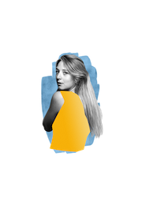
After a sell-out Fringe debut, one third of Massive Dad (“Hilarious” Guardian) is back with another show about how we got here and where we're supposed to go next. Armed with an absolutely useless degree in Anthropology, she'll be combining character comedy and story-telling with very intense academic research. Which is surely what everyone wants from their comedy. Tessa has appeared in Birds of a Feather, Damned and @elevenish and would very much like you to come and hang out with her.
“Real star quality” ★★★★ Chortle
“Like a modern day Spice Girl” ★★★★ Broadway World
“I love Tessa Coates” Caitlin Moran
Photo by James Deacon / edited by Patrick Turpin.
Paul Mayhew-Archer: Incurable Optimist
Paul’s co-written or worked on many much-loved comedy shows - The Vicar of Dibley, I’m Sorry I Haven’t A Clue, Spitting Image and ‘Roald Dahl’s Esio Trot’ starring Dustin Hoffman and Judi Dench. Now Paul has Parkinson’s but he’s still laughing. Following an award-winning BBC documentary, ‘Parkinson’s: The Funny Side’ and a triumphant debut at London’s Comedy Store, here’s a one man show about the therapeutic power of comedy. Paul is not contagious but he is worth catching.
“Very funny - and moving too” Richard Curtis
“An Inspiration” Person with Parkinson’s
Photo by Simon Mayhew-Archer.
Heidi Regan: Heidi vs Sharks
 Winner of BBC New Comedy Award 2017 and So You Think You're Funny 2016, Heidi Regan previews her debut show for the Edinburgh Fringe. In Heidi vs Sharks, the aforementioned Heidi explores our relationship with an increasingly confusing world via the medium of bad shark films (starring the aforementioned sharks). Topics covered include religion, the NHS and what makes Shark Attack III the Godfather III of bad shark films. Trigger warning: There will be sharks (in a few video clips, not in the audience).
Winner of BBC New Comedy Award 2017 and So You Think You're Funny 2016, Heidi Regan previews her debut show for the Edinburgh Fringe. In Heidi vs Sharks, the aforementioned Heidi explores our relationship with an increasingly confusing world via the medium of bad shark films (starring the aforementioned sharks). Topics covered include religion, the NHS and what makes Shark Attack III the Godfather III of bad shark films. Trigger warning: There will be sharks (in a few video clips, not in the audience).
Photo by Karla Gowlett.
Matt Winning: Climate Strange
 Dr Matt Winning is thinking about starting a family but wonders if he should. A show about why our knowledge about climate change doesn't necessarily match our actions. As seen as the Environmental Correspondent on 'Unspun with Matt Forde' on Dave.
Dr Matt Winning is thinking about starting a family but wonders if he should. A show about why our knowledge about climate change doesn't necessarily match our actions. As seen as the Environmental Correspondent on 'Unspun with Matt Forde' on Dave.
“Winning’s sharp wit and intelligence allows him to educate as he entertains” ★★★★1/2 Sunday Post
“a very powerful and eccentric piece of comedy from Winning, who is sure to become one of the largest names in UK comedy very soon” ★★★★ ShortCom.co.uk
Photo by Jessica McDermott.
Louise Reay: Eraserhead
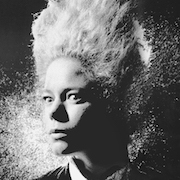
The first show in Edinburgh was banned… and lawyers told her to can the second show. How will the third show fare? Eraserhead is the third instalment of award-winning comedian Louise Reay’s provocative trilogy on power and oppression. It’s a free country, isn’t it? Currently facing legal proceedings, Louise explores issues of free expression, censorship and oppression in modern Britain.
Adelaide Fringe Best Emerging Artist winner 2017 (weekly). Best Comedy nominee Brighton Fringe 2017. Edinburgh Fringe Groundbreaker Award nominee 2016.
“Louise Reay can legitimately claim to be unique.” Independent
“Truly fantastic, utterly out there.” Al Murray
Photo by Alex van den Bosch.
William Andrews: Willy
A joyful return to stand-up for this cult idiot, William is wholeheartedly embracing the Willy he always was. Remarkable stories told in original ways. He’s daft, inimitably creative, and sharpy ingenuous to boot. Yes, he was in Alan Partridge, for like a tiny bit. Yes, he had a spot in Him & Her. Yes, he was in the second series of Broadchurch (the one that didn’t make sense), but no, for the last time, he wasn’t in Horrible Histories (he was in the other one).
“All hail the comedians you could never clone” Times
Photo by Daimler Stainless.
Mawaan Rizwan: Juice
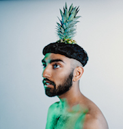
Fresh from supporting Simon Amstell on tour, Mawaan brings you a deeply personal & skilfully physical show about love, freedom and Missy Elliot. Combining riotous stories with fierce dance moves. Over 18 million views on YouTube, star of BBC's Carnage and How Gay is Pakistan?
“A mischievous performer, with a no-holds-barred physicality and high wattage charm” Guardian
Photo by Rebecca Need-Menear.
Helen Duff: How Deep Is Your Duff?
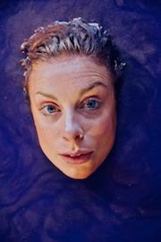
Whip smart, stream-of-consciousness comedy from “master of shamelessly silly yet socially conscious clowning” ★★★★ (BroadwayBaby.com), Helen Duff. Duff dives to “a level of intimacy most acts wouldn't dare” ★★★★ (Skinny) and “it's a joy to behold” ★★★★ (EdFestMag.com). “Bold, subversive and very funny... a formidable comic” ★★★★ (Scotsman) slips beneath the skin of standard storytelling to explode paradigms with the precision of a paint gun.
As seen on BBC Three and alongside Will Ferrell in Holmes and Watson.
“Duff is incredibly funny and deserves any and all praise that comes her way” ★★★★ Skinny
Photo by Matthew Highton.
Laura Davis: Ghost Machine
 A show about life. Performed by a ghost. For the love of god.
A show about life. Performed by a ghost. For the love of god.
Laura Davis pushes into new ground in her internationally critically acclaimed, multi-award winning show ‘Ghost Machine’. Lauded as one of the strongest and most unique comedic voices around, Laura Davis is unconventional, cathartic and exhilaratingly hilarious. Ghost Machine sees audience members returning multiple times to celebrate this darkly honest, constantly surprising, existential extravaganza.
“An original and provocative hour in the company of a unique mind.” List ★★★★
Winner Best Indie Show - Melbourne International Comedy Festival
Winner Best Comedy - Melbourne Fringe
Photo by Prakash Daniel.
Ben Target: Splosh!
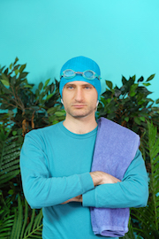
Pool party starter and Edinburgh Comedy Awards Best Newcomer nominee, Ben Target, invites you to plunge in for a paddle. Goggles on for synchronised aquatics, front crawl relays and doggy paddle lessons (for beginners). BYOL (Bring Your Own Lilo).
A gala of comedy troves and live art aquabatics, from the “maverick physical comedian” Guardian
“A joy to be part of” ★★★★ Skinny
“Bewildering fun” Scotsman
“Unruly daftness” List
“Imagine there was no Ben Target. The world would unquestionably be a darker, less interesting place” ★★★★ Chortle
Photo by Edward Moore.
Rosie Jones: Fifteen Minutes
 Fifteen Minutes is the debut hour of critically acclaimed comedian Rosie Jones (8 Out Of 10 Cats, Silent Witness). In the show, Rosie will ask the question, “Who would I be if I were able-bodied”? Nobody knows, but Rosie's hunch is she's probably a knobhead!
Fifteen Minutes is the debut hour of critically acclaimed comedian Rosie Jones (8 Out Of 10 Cats, Silent Witness). In the show, Rosie will ask the question, “Who would I be if I were able-bodied”? Nobody knows, but Rosie's hunch is she's probably a knobhead!
“It's rare to see a comedian who exudes such joy” Chortle
Sunil Patel: Megalodon
 'Man is wolf to man.' Sounds pretty clever doesn't it? I will do about five minutes on bumholes first, though. This show is also about bad choices, my dad going to Disney World without me when I was eight and why some people don't own sunglasses. As seen on BBC Asian Network Comedy, Channel 5 and Viceland.
'Man is wolf to man.' Sounds pretty clever doesn't it? I will do about five minutes on bumholes first, though. This show is also about bad choices, my dad going to Disney World without me when I was eight and why some people don't own sunglasses. As seen on BBC Asian Network Comedy, Channel 5 and Viceland.
“A clearly gifted comedian” EdFestMag.com
Photo by Rob Greig.
Olga Koch: Fight
 In 2014, Olga Koch's father got stopped by authorities on the Russian border, which resulted in the most surreal year in her family's life. This year, the Amused Moose National New Comic Award Finalist will try to dissect this real-life spy drama with nothing but a projector and “a naturally comic mind” (Bruce Dessau).
In 2014, Olga Koch's father got stopped by authorities on the Russian border, which resulted in the most surreal year in her family's life. This year, the Amused Moose National New Comic Award Finalist will try to dissect this real-life spy drama with nothing but a projector and “a naturally comic mind” (Bruce Dessau).
Olga Koch does stand-up comedy onstage and creates cathartic performance art in the privacy of her own home. She has trained at the UCB Theatre in New York, as well as the Soho Theatre and the Free Association in London. Along with fellow Soho Young Company comics, she runs Joy Multiplication, a monthly comedy night in London. Olga is a confident girl.
Photo by Victor Preda.
Rob Oldham: Worm's Lament
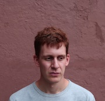
Rob Oldham, Amused Moose Breakthrough Comic 2017 and tour support for John Kearns and Abandoman, considers politics, youth, and death. He does jokes to ensure this is funny.
Worm’s Lament is an hour of stand-up, poetry, reflective nostalgia, and ambient anxiety drawing on Rob’s “Quirky, offbeat sensibilities that distil into smart jokes that rarely sound like anyone else’s” (Chortle).
To put it enthusiastically, “You have not lived until you have heard one of Rob Oldham’s tonal prose poems.” (Ed Fest Mag).
Don’t miss this debut show from an exciting, thoughtful young comic.
Directed by Liam Williams
Photo by Jonny Mellor.
Ingrid Dahle: Wingrid
How does a shy Norwegian who grew up in a small village in the fjords end up in the UK performing unique, joyful stand up comedy? Surely there’s more to it than simply putting a W in front of your name to become the winner you were meant to be? Join Ingrid to find out as she unravels the mystery and shares the secrets of how she became: Wingrid – Superior Human Being excelling at life.
Winner: Brighton Comedy Award.
Runner up: Leicester Mercury.
“Fast rising comedian” Sunday Times
“Destined for stardom” Argus
“Alternative hero of the future” Chortle
Photo by David Jordan.
Ben Pope: Baby Sasquatch
Ben Pope is an award-winning comedian and cosmopolitan mammal. In this, his debut hour of stand-up, the hapless beast tries to find a nest. Expect jokes and stories on millenial rootlessness, finding and escaping yourself, Scandinavia and milk.
Piccadilly Comedy Club New Comedian of the Year 2017 and So You Think You’re Funny Finalist 2015. As seen on Comedy Central Online and heard on BBC Radio 4extra.
Praise for previous work:
“Hilarious” List
“Straight-up hilarious” Telegraph
“Ridiculously hilarious” Skinny
Yuriko Kotani: Overwork in progress
 Born and raised in Japan, Yuriko Kotani now lives in the UK. Please come and join her new work-in-progress show! Using her unique perspective, she is going to tell stories of her experiences and thoughts. As seen on Russell Howard's Stand Up Central and Pls Like (BBC Three). BBC New Comedy Award 2015 winner and Time Out's One to Watch.
Born and raised in Japan, Yuriko Kotani now lives in the UK. Please come and join her new work-in-progress show! Using her unique perspective, she is going to tell stories of her experiences and thoughts. As seen on Russell Howard's Stand Up Central and Pls Like (BBC Three). BBC New Comedy Award 2015 winner and Time Out's One to Watch.
A hilarious safari through rare diseases, mishaps with appliances, and the chance to convince your son you've got some sort of backbone. Taking in ambition, money, a sort of moral autopilot, and whether men as a species are worth saving.
The Delightful Sausage: Regeneration Game
Surreal comedy from Yorkshire’s finest, meat-themed double act. Join Chris and Amy in a gag-packed mission to crown their town, City of Culture. Find out what culture is, who’s been secreting it and why that stain won’t wash. A multimedia adventure for fans of economic recession, blue top milk and Bigfoot. The follow-up to the duo’s debut show which was recorded for NextUp and transferred to the Soho Theatre.
“One of the best adverts for modern alternative comedy” ★★★★ EdFestMag.com
“Inventive and increasingly hysterical” ★★★★ Skinny
“Brims with ideas and creativity” ★★★★ Three Weeks
Photo by Andy Hollingworth.
Helen Bauer: Yellow Flower
 Hotly-tipped new stand up comedian Helen Bauer presents Yellow Flower a show of her new thoughts, feeling and emotions on pretty much everything. Every thought is over thought and then has alcohol thrown on it. Helen Bauer peaked when she broke her hymen on a tampon aged 11. As heard on BBC Radio 4 Extra and seen on BBC3 and Comedy Central UK.
Hotly-tipped new stand up comedian Helen Bauer presents Yellow Flower a show of her new thoughts, feeling and emotions on pretty much everything. Every thought is over thought and then has alcohol thrown on it. Helen Bauer peaked when she broke her hymen on a tampon aged 11. As heard on BBC Radio 4 Extra and seen on BBC3 and Comedy Central UK.
“I don’t think I stopped laughing for the entire half hour Helen was on stage. An incredibly likeable comic who takes anecdotal comedy to another level.” Funny Women
Photo by Steve Ullathorne.
Comperes
To be announced…